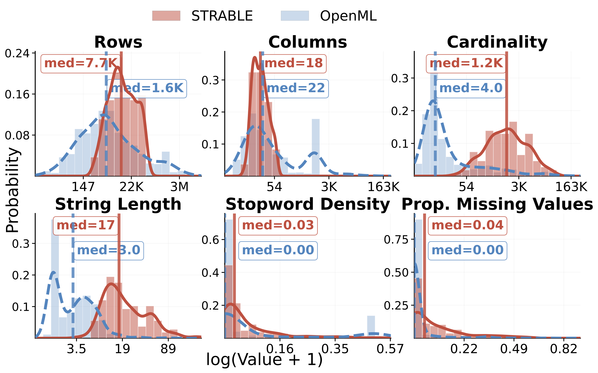
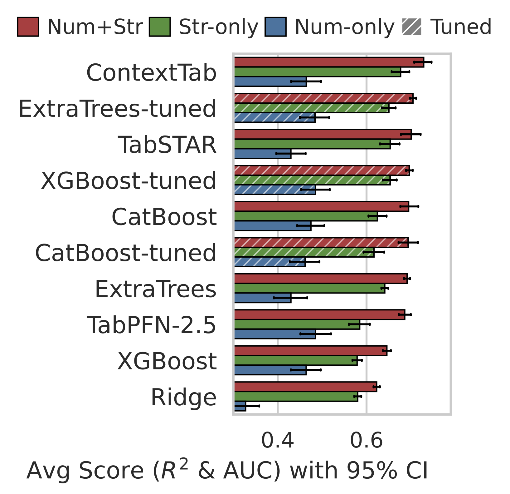
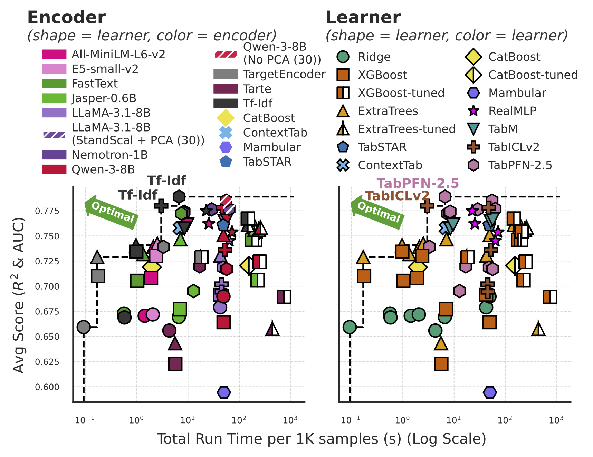
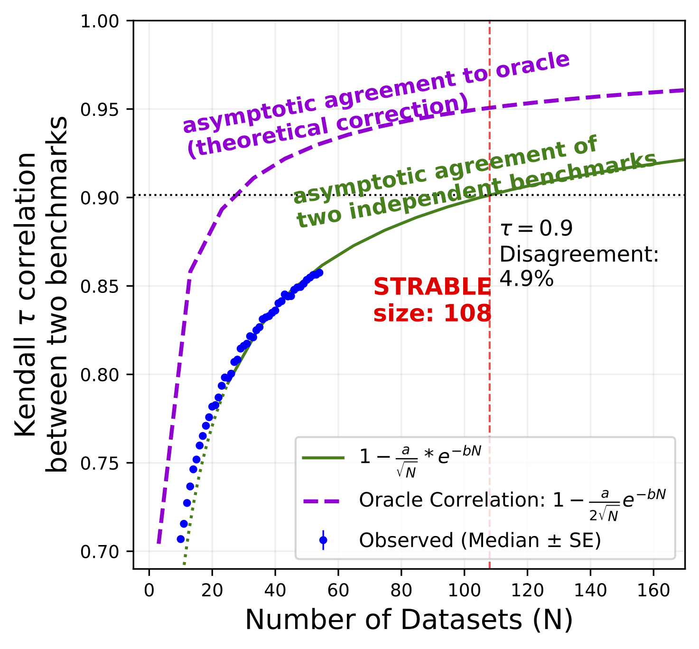
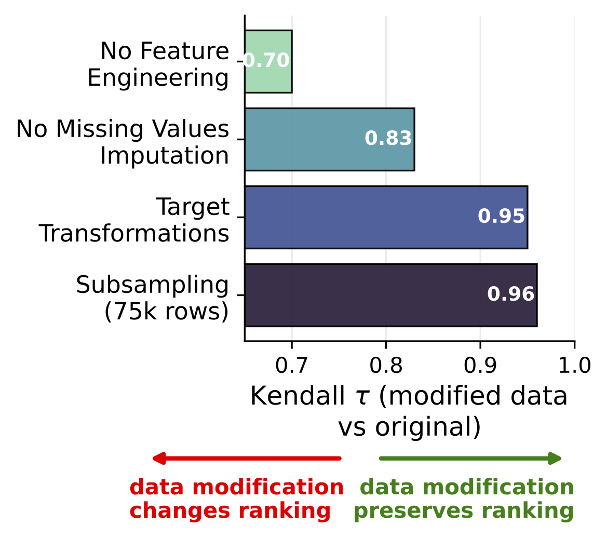
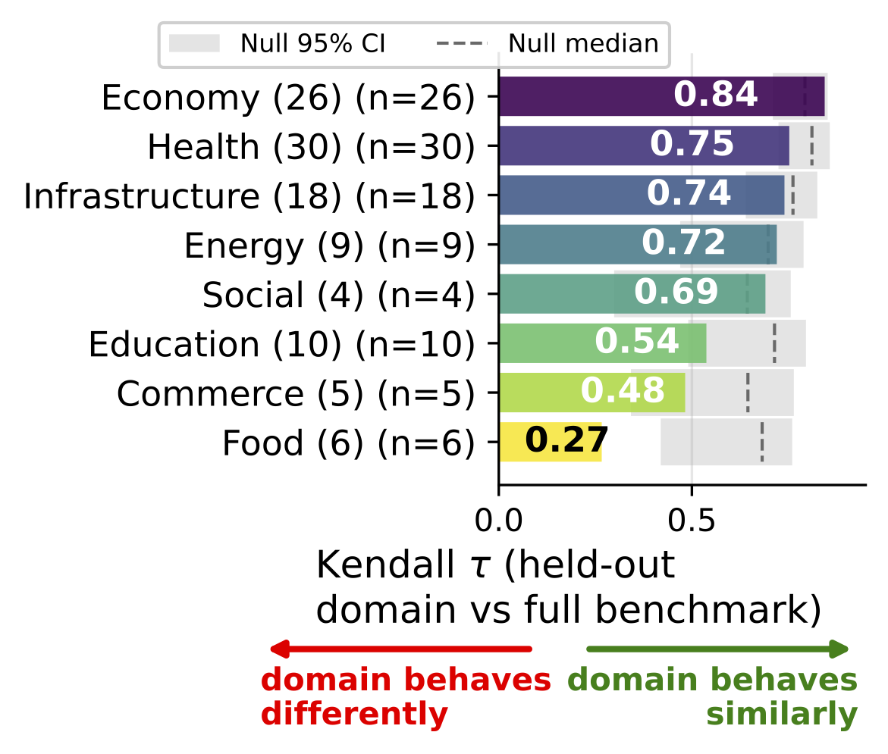
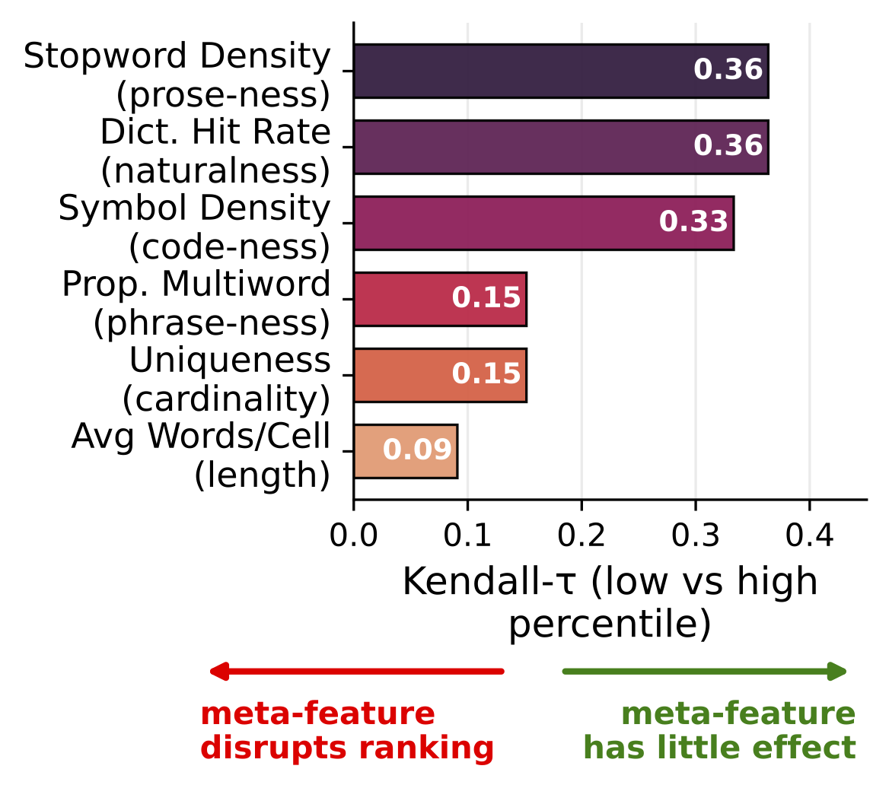

STRABLE: Benchmarking Tabular Machine Learning with Strings
TL;DR
- STRABLE is a benchmark of 108 real-world tabular datasets that mix numerical columns with raw string columns (names, codes, free text, dates, identifiers, ordinary categoricals), drawn from healthcare, finance, infrastructure, commerce, education, energy, food, and social-data sources.
- It is the first benchmark to preserve raw strings rather than dropping or pre-encoding them, enabling fair comparison of string-handling strategies on tabular data.
- We run the first large-scale empirical study on this corpus, evaluating ~445 pipelines: modular ones (a string encoder feeding a tabular learner) and end-to-end models that jointly handle strings and numbers (CatBoost, TabSTAR, ConTextTab, Mambular).
- Lightweight encoders + advanced tabular learners win on most tables. Tf-Idf paired with a tabular foundation model (TabPFN-2.5, TabICLv2) sits on the best accuracy-vs-runtime trade-off; large LLM encoders only pay off when the leading string type is free text.
- Decoder-only LLM embeddings need the right dimensionality reduction. Default PCA degrades them; standard-scaling-then-PCA or no-PCA (slicing the first N raw embedding dimensions) recovers their performance.
- STRABLE's rankings are stable across application fields and data-preparation choices, and converge close to the oracle ranking (Kendall-τ ≈ 0.95 at N = 108).
Dataset
What STRABLE contains and how to load it.
What's in it
STRABLE bundles 108 tables across 8 application fields — Health (30), Economy (26), Infrastructure (18), Education (10), Energy (9), Food (6), Commerce (5), Social (4). Each table is paired with a supervised target: 13 binary classification, 19 multi-class classification, and 76 regression tasks.
Every table mixes numerical columns with at least two string-valued columns. The median table has 7.7K rows and 18 columns; the median string column has cardinality 1.2K and a mean string length of 17 characters — i.e. STRABLE's strings are short and repetitive, not long-form prose.
A taxonomy of string columns
We classify every string column into one of six semantic types. The first four cover 97% of columns; together they capture why a single “just encode strings” recipe doesn't work.
- Categorical (49.45%) — low-uniqueness repeating labels (e.g. “Red”, “General Acute Care”).
- Name (22.78%) — proper nouns for people, organizations, places, products (e.g. “John Doe”, “Max Mara”).
- Structured Code (17.0%) — strings with recognizable patterns (e.g. ZIP codes, ICD/NDC medical codes, URLs).
- Free Text (8.23%) — multi-word prose with natural-language stopwords (e.g. user reviews, clinical notes).
- Datetime (1.97%) — temporal strings (e.g. “2024-03-15”, “Q1 2024”).
- Identifier (0.5%) — near-unique opaque keys (e.g. UUIDs, hashes, auto-generated IDs).

STRABLE vs OpenML column metadata. Solid lines: STRABLE; dashed lines: OpenML. STRABLE has comparable column counts but ~5× more rows per table, with string columns that are shorter and more repetitive than in prior text-tabular studies.
Sourcing & preprocessing
The 108 tables come from 33 distinct public sources — large institutional repositories (FDA, World Bank, HRSA, FCC, HIFLD, ClinicalTrials.gov, …) and community-driven platforms. We minimize preprocessing on purpose, so that encoder/learner choices are evaluated on data as-found rather than data already prepared with a specific architecture in mind:
- Flatten nested structures; drop duplicate rows, single-value columns, all-null columns, and rows with missing labels.
- Remove features that are trivial functions of the target (to avoid leakage).
- Snapshot strategy: keep only the most recent available year of data.
- Subsample large tables to a maximum of 75,000 rows (uniform for regression, stratified for classification).
- For regression with skewed targets, apply a skewness-minimizing transform chosen from {log, log1p, cbrt, arcsinh, signed-log}.
- No feature engineering and no string-specific encoding at the corpus level — missing values, dates, ranges, and high-cardinality strings are left for the pipeline to handle.
Load the data
The 108 preprocessed tables are mirrored on the Hugging Face Hub at inria-soda/STRABLE-benchmark. From Python:
from datasets import load_dataset
# load a single table by name (see the dataset card for the full list of 108)
ds = load_dataset("inria-soda/STRABLE-benchmark", "yelp_business")
The repository at soda-inria/strable provides a one-shot mirror script (python data/download_datasets.py) and the per-source preprocessing scripts for reproducing the corpus from raw upstream files.
Analysis
What we found running encoder-learner pipelines on STRABLE.
1. Strings carry signal that complements numbers
On every learner we tested — from Ridge to TabPFN-2.5 — adding string columns on top of the numeric features yields a tangible accuracy improvement, with no learner doing better on numbers alone. Modeling strings is not optional.

2. Lightweight encoders + advanced learners win the accuracy/runtime trade-off
When we plot every pipeline on accuracy vs runtime, the Pareto frontier (the best accuracy you can get for any given compute budget) is dominated by combinations of simple encoders (Tf-Idf, target encoding) with sophisticated tabular learners (TabPFN-2.5, TabICLv2). Heavy LLM encoders cost orders of magnitude more runtime without consistently improving accuracy — because most of STRABLE's strings are short and repetitive, frequency-based encoders capture the signal cheaply.
Simple linear baselines like Ridge do benefit visibly from heavier encoders; sophisticated learners largely don't.

3. LLM embeddings need careful dimensionality reduction
LLM encoders produce embeddings with up to thousands of dimensions, which must be reduced before being fed to a tabular learner. Default PCA is fine for encoder-only models (MiniLM, E5, BGE) but hurts decoder-only models (LLaMA, Qwen, OPT). Standardizing each dimension before PCA, or simply slicing the first N raw dimensions (a Matryoshka-style choice), recovers their performance.
The mechanism: decoder embeddings concentrate variance in a small number of dimensions (their representations collapse into a narrow cone), so default PCA latches onto those dominant axes and discards semantic signal that lives elsewhere.

4. Modular pipelines outperform today's end-to-end string-tabular models
A two-stage pipeline — string encoder feeding a tabular learner — consistently outperforms end-to-end architectures designed for string-tabular data (TabSTAR, ConTextTab, Mambular). The critical-difference diagram below shows that the top of the ranking is dominated by modular pipelines (solid lines); end-to-end models (dashed lines) sit in the middle of the pack.

5. The leading string type determines which pipeline wins
The ranking changes meaningfully only when free text dominates. On Categorical-, Names-, or Structured-Code-led tables the global top pipelines still win — Tf-Idf and lightweight LMs paired with TabPFN-2.5. On the small subset of Free-Text-led tables, large LLM encoders (LLaMA-3.1-8B, Qwen-3-8B, Jasper-0.6B) enter the top 10 paired with TabPFN-2.5.

6. STRABLE rankings generalize
For a benchmark's rankings to be useful, they must converge to the rankings you would get on an unseen population of similar datasets. Using a Kendall-τ analysis of disjoint subsets of STRABLE, we estimate that at N = 108 the benchmark agrees with the oracle ranking at τ ≈ 0.95 (~2.5% disagreeing model pairs).
The ranking is also stable across the 8 application fields and across data-preparation choices (subsampling, feature engineering, target transformations, missing-value imputation): all give Kendall-τ ≥ 0.7 against the default. The features that do disrupt rankings are properties of the strings themselves — average words per cell and column cardinality — reinforcing that string characteristics, not application domain, are what learners need to handle well.

Convergence to the oracle ranking.

Stability across data-preparation choices.

Stability across application fields.

String length is the dominant ranking disruptor.
Share / Cite
Share this page:
Cite this benchmark:
BibTeX
@misc{blayer2026strablebenchmarkingtabularmachine,
title={STRABLE: Benchmarking Tabular Machine Learning with Strings},
author={Gioia Blayer and Myung Jun Kim and Félix Lefebvre and Lennart Purucker and Alan Arazi and Eilam Shapira and Roi Reichart and Frank Hutter and Marine Le Morvan and David Holzmüller and Gaël Varoquaux},
year={2026},
eprint={2605.12292},
archivePrefix={arXiv},
primaryClass={cs.LG},
url={https://arxiv.org/abs/2605.12292},
}